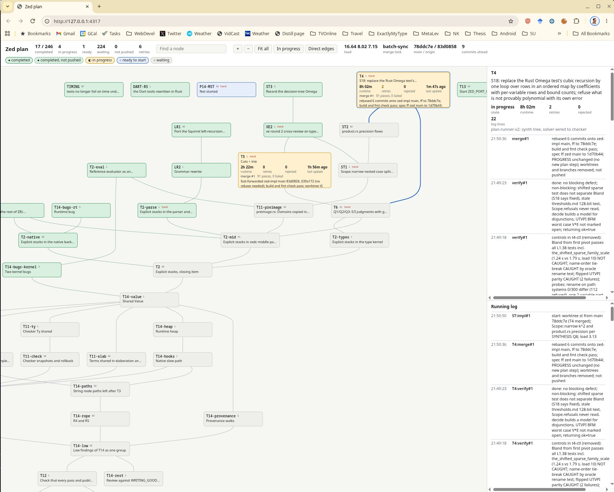
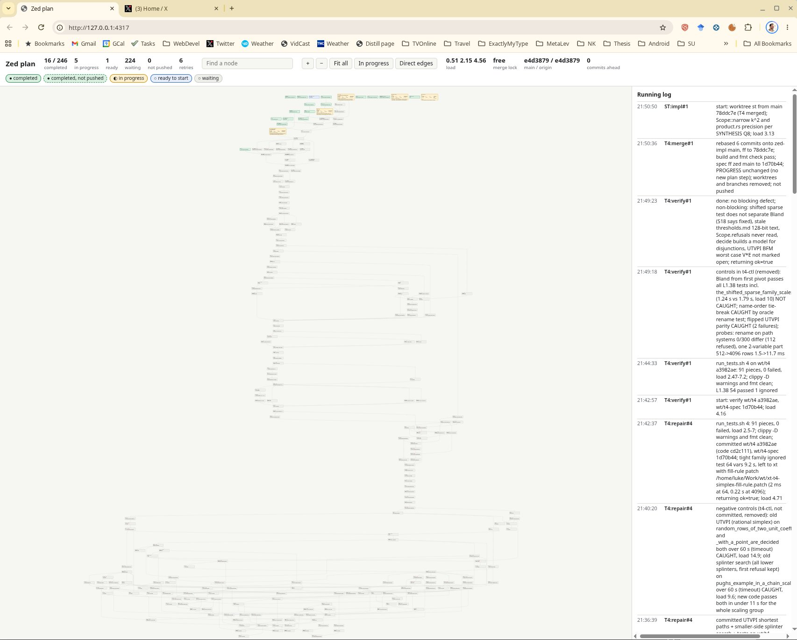

Xây ngôn ngữ Zed với đội quân agent AI
Bản dịch tiếng Việt của bài đăng X (note tweet) I'm building a new programming language, Zed bởi Luke Hutchison (@LH). Bài gốc không kèm thông báo bản quyền/giấy phép riêng. Bài dịch chỉ nhằm chia sẻ kỹ thuật; mọi quyền đối với nội dung gốc thuộc về tác giả. Tài khoản cập nhật về ngôn ngữ khi phát hành: @ZedLang.
TL;DR
- Luke Hutchison đang xây Zed — ngôn ngữ lập trình mới dựa trên lý thuyết phạm trù (category theory), với tự song song hóa đến giới hạn Amdahl, quản lý bộ nhớ không GC và không malloc/free thủ công, partial evaluation lan tỏa, và đơn vị đo trong hệ thống kiểu.
- Ông đã ấp ủ thiết kế hơn 20 năm (khoảng 200 trang ghi chú + mã cũ) nhưng chưa đủ thời gian để tự triển khai toàn bộ.
- Ông đưa toàn bộ tài liệu cho Opus để gom thành một kế hoạch chi tiết, rồi cho Claude, ChatGPT và Gemini phê bình chéo / meta-critique đến khi hội tụ, kèm kiểm tra all-pairs trên đặc tả.
- Các agent chia đặc tả thành chuỗi bước nhỏ theo thứ tự tôpô và DAG phụ thuộc; Opus dựng thêm visualizer realtime theo dõi trạng thái từng task trên DAG.
- Kết luận của ông: agent coding giờ đóng vai “đội quân” bù băng thông của một bộ não / 24 giờ một ngày — biến giấc mơ thiết kế dài hạn thành hệ thống đang được xây trước mắt.
Tôi đang xây một ngôn ngữ lập trình mới, Zed (khi phát hành tôi sẽ đăng về nó tại @ZedLang).
Tôi đã làm việc trên ngôn ngữ này hơn 20 năm, nhưng chưa bao giờ dựng được nó, vì phạm vi quá tham vọng. Đây là một kiểu ngôn ngữ hoàn toàn mới dựa trên lý thuyết phạm trù (category theory), với các mục tiêu thiết kế cốt lõi là tự song song hóa chính xác đến giới hạn Amdahl; quản lý bộ nhớ tự động, không GC và không cần malloc/free thủ công; cùng việc dùng partial evaluation một cách lan tỏa để tăng sức mạnh của ngôn ngữ, bên cạnh nhiều tính năng rất độc đáo khác, chẳng hạn đơn vị đo (accel = 5 with units("m s^-2")) là một phần của hệ thống kiểu.

Visualizer DAG “Zed plan”: trạng thái task realtime (completed / in progress / waiting) và log chạy song song
Tôi đưa cho Opus 200 trang ghi chú thiết kế mà tôi đã biên soạn suốt 20 năm qua, cùng mã tôi đã viết, và nhờ Opus biên soạn mọi thứ tôi đã tạo đến nay thành một kế hoạch thống nhất, chi tiết. Sau đó tôi trải qua nhiều vòng phê bình chéo giữa Claude, ChatGPT và Gemini: để tất cả chúng phê bình nghiêm khắc, rồi meta-critique các phê bình của nhau, rồi cùng hợp tác gộp các phê bình thành kế hoạch cải tiến, đến khi hội tụ. Tôi cũng để các agent đối chiếu chéo mọi phần của đặc tả với mọi phần khác (so sánh all-pairs) để tìm mâu thuẫn, khoảng trống trong đặc tả, v.v. Rồi tôi để các agent biến đặc tả thành một chuỗi dài các bước tăng dần nhỏ (một thứ tự tôpô của việc gì phải dựng trước việc gì), cũng như cấu trúc DAG của các phụ thuộc nằm dưới thứ tự tôpô đó.
Tiếp theo tôi nhờ Opus dựng một visualizer hiện cho tôi mọi task trong DAG trong lúc các coding agent đang làm từng task, cập nhật realtime khi trạng thái task đổi (đang chạy / đã xong) — thứ tôi rất khuyến nghị khi bạn nhờ Opus làm một nhiệm vụ khổng lồ phức tạp, vì bạn thấy chính xác nó đang làm gì và khi nào.

Toàn cảnh DAG hàng trăm task trong “Zed plan”, kèm running log merge/verify/repair
Thật sự như phép màu khi thấy mọi thứ đang thành hình trước mắt, và thấy cách Opus xử lý DAG khổng lồ gồm các task phức tạp cùng các phụ thuộc chéo giữa chúng.
Thật điên rồ với tôi khi Opus giờ đang đơn giản xây những gì tôi đã mơ và ước tồn tại hơn 20 năm, nhưng chưa bao giờ có đủ giờ thức để triển khai! Bây giờ tôi có một đội quân làm việc cho mình, hoàn thành những gì tôi không làm nổi vì giới hạn băng thông của việc chỉ có một bộ não, và 24 giờ trong một ngày.
Thật là một ngày của những phép màu mà chúng ta đang sống.
Know-how & Insight
Ghi chú của người dịch — không phải lời của tác giả
Bài đăng ngắn nhưng phác một playbook dùng nhiều agent để “mở khóa” một dự án thiết kế dài hạn. Một số điểm có thể áp dụng trực tiếp cho developer / fintech ở Việt Nam:
- Giữ “kho thiết kế” trước khi nhờ agent code. Opus ở đây không thay thế 20 năm suy nghĩ: nó nhận ~200 trang ghi chú + mã sẵn có. Với hệ thống thanh toán, risk, hoặc core banking nội bộ, hãy chuẩn hóa ADR, RFC, diagram và invariant trước; agent mới có nguyên liệu để lập kế hoạch thay vì bịa đặc tả.
- Đa mô hình phê bình chéo, rồi hội tụ. Vòng Claude ↔ ChatGPT ↔ Gemini (critique → meta-critique → improvement plan) giảm “ảo tưởng đồng thuận” của một model duy nhất. Với PR lớn hoặc đặc tả API tiền tệ/hạch toán, có thể bắt hai agent độc lập review rồi bắt chúng phản biện lẫn nhau trước khi merge.
- All-pairs trên đặc tả. Kiểm tra từng phần đặc tả đối với mọi phần khác để tìm mâu thuẫn — gần với consistency review trong domain phức tạp (fee schedule vs ledger rules vs settlement window). Đắt về token nhưng rẻ hơn bug production.
- Topo sort + DAG nhiệm vụ nhỏ. Đừng bảo agent “viết cả compiler / cả module settlement”. Hãy ép nó xuất thứ tự tôpô và DAG phụ thuộc, rồi chạy từng nút có thể verify (test, typecheck, invariant). Đây cũng là cách tổ chức backlog monorepo fintech nhiều team.
- Visualizer / observability cho agent swarm. Dashboard realtime trạng thái task (in progress / completed / waiting) biến “black box agent” thành hệ thống quan sát được — tương tự CI dashboard hoặc workflow engine. Khi scale nhiều agent song song, không có dual-pane log + DAG thì rất khó biết đang kẹt ở đâu.
- Nhận ra nút thắt là băng thông con người, không phải ý tưởng. Bài này nhấn: thiết kế đã đủ; thiếu thời gian thức để implement. Với team nhỏ VN, ưu tiên dùng agent để thực thi kế hoạch đã chín (scaffold, test, migration nhỏ) thay vì để agent tự invent product từ đầu.
Lưu ý: Zed chưa phát hành tại thời điểm bài gốc; hãy theo @ZedLang cho cập nhật từ tác giả. Các con số tiến độ trên ảnh (ví dụ ~16–17/246 task) là snapshot lúc đăng, không phải cam kết roadmap công khai.